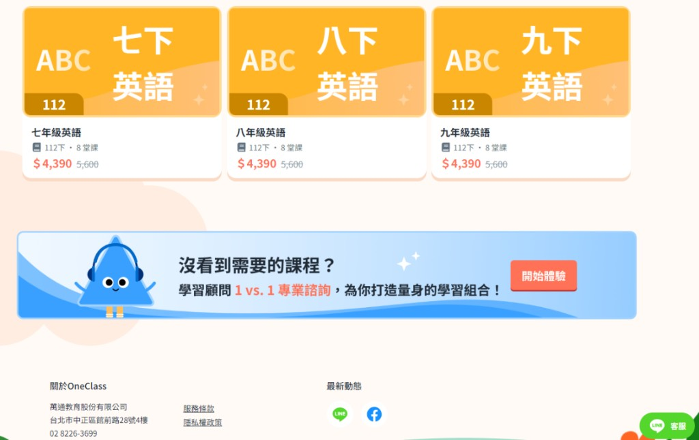
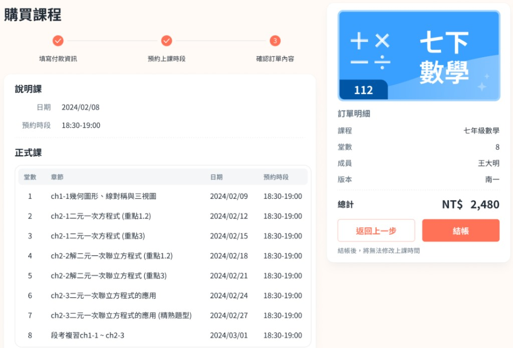

為集團打造第一個 B2C 售課漏斗
Building the group's first B2C course funnel
主導集團首個 B2C 售課平台從 0 到 1 上線，建立低價短期課程引流漏斗， 同時統一多產品線的帳戶 SOP，為核心產品導入全新客群。
Shipped the group's first B2C course-sales platform from 0 → 1 — a low-price, short-course funnel that fed new audiences into the core product, while standardising account SOPs across product lines.
背景與挑戰
OneClass 過去以高客單長期課程為主，進入門檻高。集團希望透過短期低價課程 建立引流漏斗，吸引新客試水溫後再轉介紹給核心產品。此外，潛在挑戰在於既有多條產品線使用不同帳戶系統， 資料不同步會造成客訴與潛在法規風險。
OneClass historically sold premium long-term programmes — high commitment, high friction. The group wanted a short, affordable course as a top-of-funnel, guiding new users to the core offering. Beyond the funnel itself, a deeper challenge lurked: product lines ran on fragmented account systems, and data drift was causing support tickets and compliance risks.
我的角色
- 主導 0→1 產品規劃：從商業模式到 PRD、User Flow、UI 系統。
- 盤點現有流程，建立集團首套帳戶系統標準化 SOP，整合多產品線資料流程。
- 透過使用者行為分析找出首頁轉換瓶頸，調整動線與互動設計。
- Owned 0 → 1 product definition — from business model to PRD, user flows and UI system.
- Audited existing flows and built the group's first account-system SOP, unifying data flow across product lines.
- Used behavioural analytics to find home-page conversion blockers and reshape the navigation.
產品樣貌
引流漏斗的兩個關鍵節點：
從短期低價課程的瀏覽入口，到 3 步驟結帳轉換，完成「導流 → 成交 → 回流核心產品」的銷售流程。
Two pivotal moments of the funnel:
from the short-course browsing entry to a 3-step checkout, completing the sales flow of
acquire → convert → route back to the core product.


流程與決策
- 帳戶 SOP 盤點：盤點各產品線帳戶流程，建立單一來源及統一流程，為集團建立標準化制度。
- PRD 產出：以高落地性的 PRD 對齊跨部門，會議時間縮短 64%，釋放工程人力加速產品開發。
- 數據驅動迭代：以 Clarity + GA 觀察使用者摩擦點，針對首頁動線及功能進行迭代，跳出率 −2%。
- SOP audit: walked every product line's account flow to establish a single source of truth with a unified process — a group-wide standardised system.
- Ship-ready PRDs: cross-team alignment cut meeting time by 64%, freeing up engineering bandwidth to accelerate delivery.
- Data-driven iteration: used Clarity + GA to surface friction points; iterated home navigation and features — −2% bounce rate.
關鍵成果
成果與影響
OneClass Now 成為集團首個運轉中的 B2C 售課漏斗，為核心產品帶入全新客群。 帳戶 SOP 的建立根除了過去因資料不同步造成的客訴與法規風險，為日後跨產品線成長奠定基礎。
OneClass Now became the first live B2C funnel in the group, feeding new audiences into the core product. The account SOP eliminated the support tickets and compliance risks caused by data drift — laying the groundwork for future cross-line growth.
我學到的事
- 確立並對齊商業目標，才能建立有效轉換的引流漏斗。
- PRD、視覺化文件與會議前的個別討論，能夠有效加速會議決策效率，避免時間成本浪費。
- Only by locking in and aligning on business objectives can you build a top-of-funnel that actually converts.
- PRDs, visual artefacts and pre-meeting 1:1s accelerate decision velocity — keeping meetings short and time well spent.